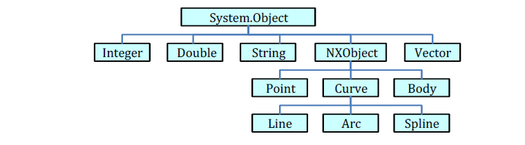

Objects
• Objects in NX Open refer to entities or elements within the Siemens NX environment. These can include parts,
assemblies, features, sketches, dimensions, faces, edges, vertices, and more. Essentially, any component or element
within the software can be considered an object.
• NX Open provides an API to interact with these objects programmatically. Users can create, modify, access, and
manipulate these objects using the various functions and methods provided by the NX Open API.
• Objects can represent different components or aspects of a design, allowing users to work with and perform actions on
them through code.
In real world everything is considered as an object.
Example: Car, bike, and Human as an object
In NX everything is an object like session, part, assembly, feature, Sketch, datum, note, dimension, drawing.

Tags
• Tags in NX Open are identifiers or references that are used to uniquely identify and manage objects within the NX
session. Each object in NX has a unique tag associated with it, and this tag serves as a handle or reference to that
specific object.
• Tags are essentially numerical identifiers that the NX Open API uses to perform operations on objects. These tags are
assigned to objects when they are created or loaded into the NX session.
• They are used to reference and perform actions on specific objects or components within the design environment. When
you need to perform operations on a specific object, you use its associated tag to identify and act upon that object.
NX Open provides methods to retrieve tags of various objects, create new objects with associated tags, and perform
actions on objects by referencing their tags.
Understanding how objects and tags work is fundamental for manipulating elements within Siemens NX using the NX Open
API. It allows developers and users to effectively create, modify, and interact with the various components of a design
or model within the software environment.